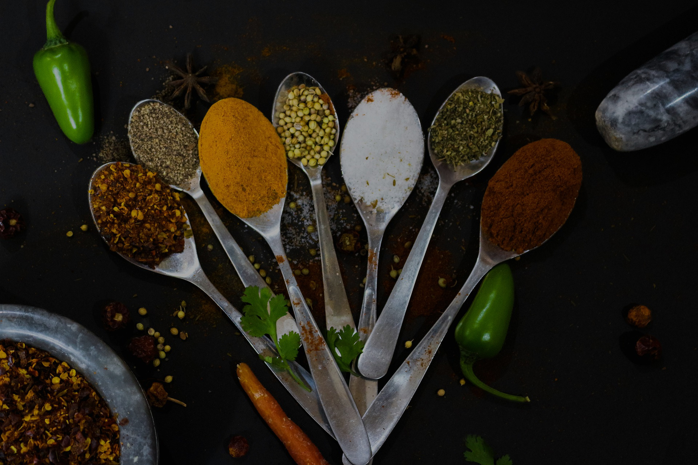

Salta al contenuto
Salta al menu di navigazione
Salta a dove ti trovi
UNI
COOKED
NON LASCIARE SIA L'UNI A CUCINARE TE!
HOME
RICETTE
CONTATTI
Stai studiano in:
Home
> Profilo utente
CIAO, {Nickname}
{TIPO STUDENTE}
{Data iscrizione}
BIOGRAFIA
{Bio}
RICETTE PREFERITE

ZONA PERICOLOSA
CANCELLA RICETTE
CANCELLA ACCOUNT